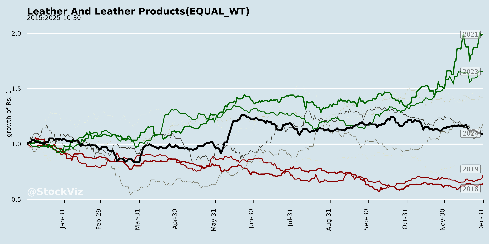
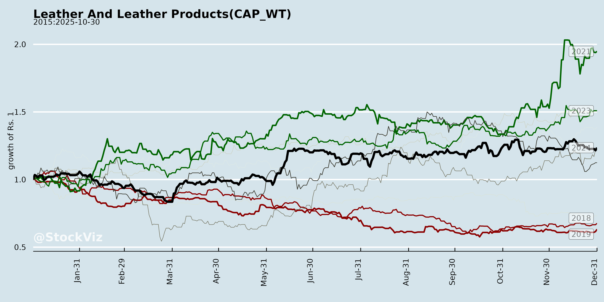
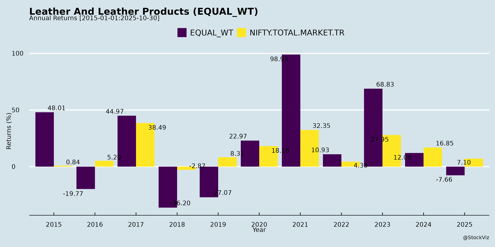
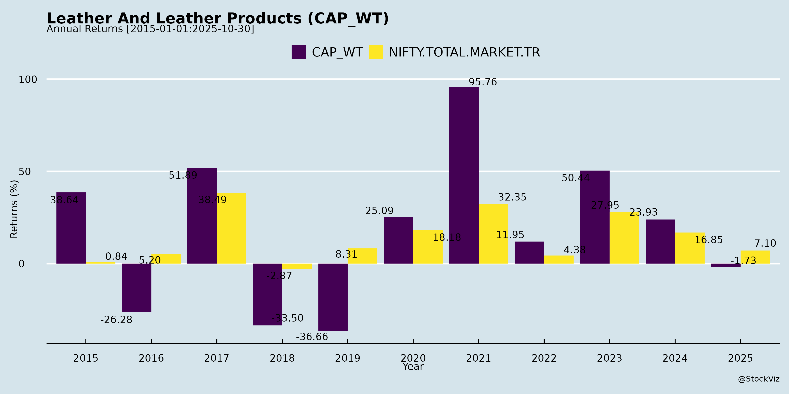
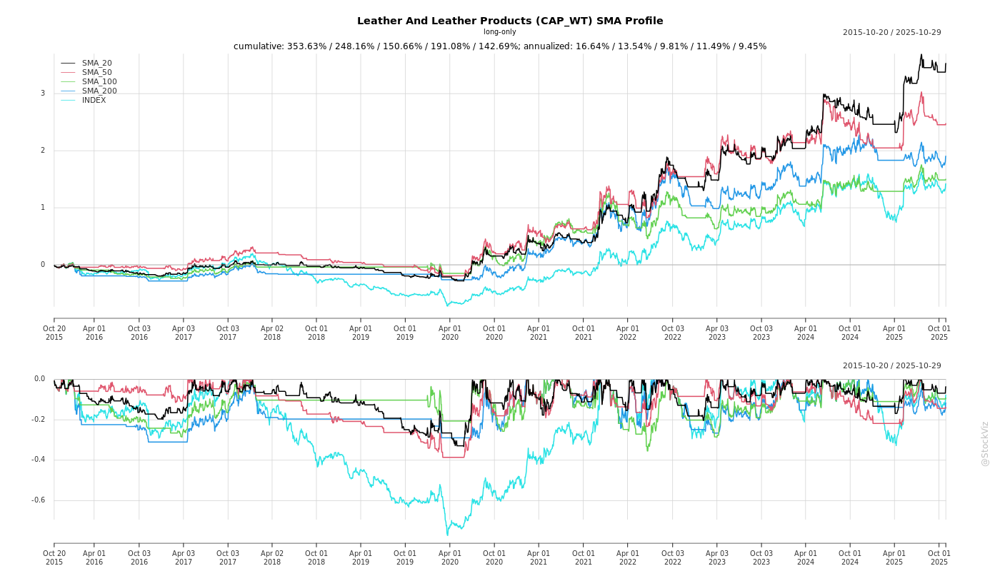

Annual Returns




Cumulative Returns and Drawdowns
SMA Scenarios

Current Distance from SMA
EBIT (% of Industry Total)
Revenue (% of Industry Total)
AI Summaries
Analyst
asof: 2025-11-29
Analysis of Indian Leather and Leather Products Sector (Focus on Synthetic Leather Segment)
Using the Q2 FY ’26 Earnings Conference Call transcript of Mayur Uniquoters Limited (a market leader in synthetic leather/PVC-PU products for automotive, footwear, furnishing, and exports) as primary input, the analysis below extrapolates insights to the broader Indian Leather and Leather Products sector. Synthetic leather (PVC/PU-based) constitutes a significant, fast-growing sub-segment (~20-25% of the sector), driven by automotive OEMs, exports, and substitutes for natural leather amid vegan/eco-trends. Natural leather faces separate challenges (e.g., environmental regulations), but synthetic dominates organized players like Mayur.
Tailwinds (Positive Factors)
- Robust Export Momentum: Exports at 42% of revenue (up from 38-40% prior quarter); Q2 export OEM at INR 71 Cr (total exports INR 100 Cr). Strong US demand via Mexico warehouses (Stellantis, Ford, Daimler); 3-4 month advance orders ensure visibility. Volume growth: 15% QoQ, 12.5% YoY. Sector tailwind from global auto recovery.
- Margin Expansion: Gross margins up 2% YoY/4-5% QoQ despite PVC price corrections. Standalone EBITDA/PAT growth (17% QoQ) outpaces revenue (15%). Provisions for old inventory (~INR 11 Cr) temporary; expected to normalize.
- Domestic Stability: Auto OEM (INR 49 Cr), replacement (INR 36 Cr), footwear (INR 43 Cr) steady; furnishing (INR 8 Cr) growing via dealer expansion.
- Policy Support: Anti-dumping duties on Chinese PU curb under-invoicing (20-40% price edge). Potential FTAs (e.g., US tariff cut from 50% to 25%, EU/AFTA) boost competitiveness vs. global peers.
- CSR/Brand Building: Plantations, education/health initiatives enhance ESG appeal for OEMs.
Headwinds (Negative Factors)
- Standalone-Consolidated Gap: Q2 standalone PAT INR 48 Cr vs. consolidated INR 40.8 Cr due to inventory in US/Mexico transit/warehouses (not yet realized on sales). Continuous process but creates volatility.
- PU Segment Drag: Revenue INR 7.8 Cr (up 48% QoQ value, 12.5% volume), but utilization only 23-25%; loss-making (INR 5.8 Cr prior quarter, depreciation-driven, no cash loss). Chinese competition persists despite duties.
- Inventory Provisions: INR 11 Cr in Q2 for old US stock impacts consol margins (down 238 bps YoY in Q1).
- Capacity Constraints: Utilization at 75-77%; demand outpacing supply, necessitating capex amid PVC price volatility.
- Sector-Wide: Synthetic leather exposed to raw material fluctuations (PVC/resins); natural leather headwinds (tanning pollution bans) indirectly favor synthetics but cap overall sector growth.
Growth Prospects
- Export-Led Expansion: US/Europe OEMs to drive 15%+ growth (vs. domestic 8-10%); FY26 guidance: 12-15% revenue, 15-20% profit growth. New models/Ford tie-ups; marine/general exports (INR 29 Cr) scaling. Potential to exceed if FTAs materialize (3-4 year horizon).
- PU Ramp-Up: 21-32% QoQ growth; pilots with H&M, Adidas, Zara; anti-dumping aids localization. Long-term: Shift to profitability via volume (target unspecified but gradual).
- Capacity Addition: New South India plant (1 line, 4-5 lakh meters/month or INR 50-60 Cr annual revenue); Mexico on hold but strategic for US. Surplus cash (INR 450 Cr net) funds capex without debt.
- Volume Outlook: Q2 at 8 Mn meters; H1 export volume +12.5-14% YoY. Sector prospects: India’s leather exports (~USD 5 Bn) to grow 10-12% CAGR to 2030 (auto/footwear demand); synthetics gain from EV/vegan shifts.
- Diversification: Furnishing/retail push; total FY26 exports eyed at INR 350-400 Cr (from ~INR 250-300 Cr base).
Key Risks
- US Tariff/Geopolitical Uncertainty: 50% duties mitigated via Mexico but FTA delays could mute general exports. Mexico plant hold due to “strategic reasons”/market confusion.
- PU Execution Delays: Low utilization risks repurposing to PVC (feasible but OEMs prefer separate lines for audits); competition from Gas Industry peers already profitable.
- Inventory/Provisioning Volatility: Ongoing transit gaps and old stock write-downs (~INR 10-11 Cr/quarter) pressure consol results; EBITDA flat H1 despite standalone gains.
- Customer Concentration: Heavy reliance on US auto OEMs (Stellantis/Ford); European rivals (e.g., Benecke-Kaliko/Continental) block Mercedes/BMW US entry without local plants.
- Macro/Sector Risks: PVC price reversal, auto slowdown (domestic/export), forex (USD strength aids but volatility hurts). Broader sector: Water scarcity, effluent norms for natural leather; synthetics face plastic regulations.
Summary
Mayur Uniquoters exemplifies strong tailwinds in synthetic leather (exports at 42%, 15% QoQ revenue growth, US OEM orders), positioning the Indian leather products sector for 10-15% FY26 growth amid global auto recovery and FTAs. Growth prospects are robust (South India capex, PU scaling, INR 350-400 Cr exports), supported by INR 450 Cr cash war chest. However, headwinds like consol gaps, PU losses, and provisions cap near-term margins, with key risks in US tariffs, execution delays, and competition potentially derailing 15-20% profit guidance. Overall, positive outlook for synthetics (sector share rising to 30%+), but monitor H2 for inventory normalization and PU breakeven. Investors should track Q3 exports and capex updates.
Note: Analysis sector-focused but Mayur-specific (organized player); unorganized/natural leather may lag due to compliance issues.
Financial
asof: 2025-11-30
Analysis of Indian Leather and Leather Products Industry
Based on Q3/Nine Months FY25 (ending Dec 2024) and H1 FY26 (ending Sep 2025) filings from key players: Bhartiya International Ltd., Superhouse Ltd., Zenith Exports Ltd., AKI India Ltd., and Mirza International Ltd.
The Indian leather sector (focused on footwear, apparel, gloves, and accessories) shows resilient revenue growth driven by export demand and domestic penetration, but faces persistent margin compression. Revenue surged 25-35% YoY across sampled firms (e.g., Bhartiya: +33% consolidated 9M revenue to ₹791 Cr; Superhouse: +13% H1 to ₹352 Cr consolidated; AKI: +32% H1 to ₹452 Cr consolidated). However, PAT remains thin (0.1-3% margins) due to costs. Sector aligns with India’s leather exports (~$4.5B FY24, targeting $10B by 2030 via PLI schemes).
Tailwinds (Positive Factors)
- Robust Demand & Volume Growth: Strong YoY revenue jumps (Bhartiya: 32% Q3; Superhouse Leather segment: 17% H1; AKI: 32% H1). Fashion/leather apparel exports benefit from global recovery (EU/US demand). Bhartiya surpassed FY24 revenue in 9M FY25.
- Operational Leverage: Employee/other expenses as % of revenue declined (Bhartiya: employee cost -1.1% mix YTD; Superhouse: efficiency post-land sale).
- Fund Infusion & Capex: Bhartiya raised ₹129 Cr via warrants for working capital/capex; AKI issued shares/warrants (₹293 Cr proceeds H1).
- Policy Support: Govt. PLI scheme, SEZ incentives (Bhartiya SEZ sub), export focus (Superhouse intl. subs like UK/Spain).
Headwinds (Challenges)
- Input Cost Inflation: Raw material consumption up 4-5% as % of revenue (Bhartiya: 58.7% YTD vs 54%; AKI volatile). Global supply chain issues noted.
- High Finance Costs: 4-5% of revenue (Bhartiya: ₹34 Cr YTD; Superhouse: ₹11 Cr H1), reflecting debt reliance amid capex.
- Thin Margins & Volatility: EBITDA margins dipped (Bhartiya: 9.5% vs 11.3%; Zenith losses). Inventory fluctuations (positive changes hurt profits, e.g., Bhartiya +₹260 Cr YTD).
- Associate/Sub Losses: Bhartiya consolidated PAT near-zero due to ₹13 Cr associate drag (real estate depreciation); Superhouse minority impacts.
Growth Prospects
- Export-Led Expansion: Intl. subs/JVs (Bhartiya: Italy/China; Superhouse: UK/Spain/France; AKI: UK LLP) drive 20-30% top-line potential. Bhartiya targets factory upgrades; Superhouse shifting ops for synergies.
- Domestic & Premiumization: Fashion/apparel shift (Bhartiya single segment); gloves/footwear demand (Zenith/AKI).
- Revenue Trajectory: 9M FY25 already > FY24 for Bhartiya/AKI; Superhouse H1 strong. Sector CAGR ~10-12% projected (driven by $10B export goal, e-commerce).
- Capex Cycle: Warrant proceeds (Bhartiya ₹129 Cr utilized for WC) signal modernization; obsolete asset disposal (Zenith Dornier machine).
Key Risks
| Cost & Margin Pressure |
Raw mat/fuel inflation; forex volatility (not explicitly hedged). |
Bhartiya EBITDA margin -180 bps YTD; Zenith 9M loss ₹1.3 Cr. |
| Debt & Liquidity |
High finance costs; working capital intensity (rising receivables/inventories). |
Superhouse borrowings ₹17 Cr current; AKI ₹1.8 Cr short-term. |
| Operational |
Inventory/stock volatility; obsolete assets (Zenith); sub/associate drags. |
Bhartiya associate losses ₹13 Cr; Superhouse Q1 consolidated loss. |
| Regulatory/External |
Social Security Code 2020 (pending); global slowdown/inflation. |
Noted in all filings; unhedged forex (Zenith provisions). |
| Execution |
Thin PAT despite growth; small-cap vulnerability (Zenith/AKI scale). |
Consolidated PAT <1% revenue (Bhartiya 0.1% Q3). |
Summary Outlook: Moderate Growth (8-12% sector CAGR FY26) with tailwinds from exports/capex outweighing headwinds, but risks from costs/debt could cap margins at 2-5%. Focus on efficiency (e.g., Superhouse land monetization ₹6 Cr gain) key for sustainability. Monitor Q4 FY25 for festive/export seasonality.
General
asof: 2025-11-29
Analysis of Indian Leather and Leather Products Sector
Based on the provided filings from key players like Mayur Uniquoters Ltd. (synthetic leather leader), AKI India Ltd. (leather goods), Bhartiya International Ltd. (apparel/leather), Mirza International Ltd. (footwear/leather), and Zenith Exports Ltd. (leather exports), the sector shows resilience amid strong export demand but faces cyclical pressures. Mayur’s robust H1 FY26 results (ended Sep 2025) dominate positives, while AKI’s modest Q1 indicates variability. Below is a structured summary of headwinds, tailwinds, growth prospects, and key risks.
Tailwinds (Positive Factors)
- Robust Revenue & Profitability Growth: Mayur reported standalone Q2 revenue from operations at ₹23,776 lakhs (↑10% QoQ, ↑10% YoY), H1 PBT ₹11,995 lakhs (↑19% YoY), and net profit ₹8,933 lakhs (strong margins ~20-27%). Consolidated revenue ₹24,031 lakhs/Q2. High other income (₹1,277 lakhs/Q2 from investments/FX gains) and OCI (₹191 lakhs from FX) signal healthy liquidity (cash ₹6,889 lakhs standalone).
- Export Momentum: Mayur’s subsidiaries (US, South Africa, Europe) contributed positively; consolidated trade receivables managed well (↓ from ₹18k to ₹17k lakhs). AKI’s consolidated revenue ₹1,766 lakhs (Q1 FY26) reflects steady ops.
- Talent & Incentives: SMP appointments (Mayur: 3 AGMs in marketing/business excellence; Bhartiya: Outerwear head with 30+ yrs exp). Mirza’s ESOP 2025 (25L options at ₹10 exercise price) aids retention/motivation.
- Capital Infusion: AKI raised ₹206 Cr via warrant conversion (Jun 2025) for WC (₹156 Cr) & corporate purposes (₹49 Cr)—fully utilized, no deviation.
- Healthy Balance Sheets: Mayur’s equity ₹101,389 lakhs, investments ₹23k+ lakhs; low debt (borrowings <₹600 lakhs). AKI’s equity stable post-fundraise.
Headwinds (Challenges)
- Demand Volatility & Seasonality: AKI Q1 standalone revenue dipped to ₹1,136 lakhs (↓33% QoQ from ₹1,705 lakhs), with high material costs (₹1,740 lakhs) and inventory buildup (positive change ₹1,183 lakhs reversal). Mayur saw inventory fluctuations (₹691 lakhs increase Q2).
- Cost Pressures: Elevated expenses—Mayur’s materials ₹12,508 lakhs (52% of rev), employee costs steady but power/other expenses up. AKI finance costs ₹51 lakhs (Q1).
- Physical Shareholder Engagement: Zenith’s letter highlights low e-KYC compliance, risking dividend delays per SEBI rules (effective Apr 2024).
- Modest Overall Scale: Smaller peers like AKI/Zenith show low profits (AKI Q1 PAT ₹21 lakhs), indicating uneven recovery post any prior slowdowns.
Growth Prospects
- Export-Led Expansion: Mayur’s OEM/export focus (new SMPs in export marketing) and subsidiaries (e.g., Mayur Uniquoters Corp. USA) position for global synthetic leather demand (auto/furniture). H1 revenue growth 20%+ YoY signals 15-20% sector CAGR potential (PLI schemes, FTAs).
- Product Diversification: Bhartiya’s outerwear push; Mayur’s single segment (PU/PVC leather) but high investments (₹12k+ lakhs) for capex (PPE ₹20k lakhs).
- Talent & Incentives Boost: ESOPs (Mirza), SMP hires enhance execution. AKI’s WC funding supports scaling.
- Digital/Compliance Push: Web-links for AGMs/reports (Zenith); funds for corporate purposes enable tech/sustainability upgrades.
- Outlook: Sector benefits from rising auto/upholstery demand (India’s leather exports ~$5B); Mayur’s 25%+ ROE trajectory could lift peers. Projected H2 acceleration via festive/export seasons.
Key Risks
- FX & Commodity Volatility: Mayur’s OCI swings (₹192 lakhs gain Q2 consolidated); net FX gain ₹810 lakhs but exposes exports (70%+ revenue).
- Margin Erosion: High materials (50-60% costs), depreciation (₹735 lakhs/Q2 Mayur). AKI’s low EPS (₹0.02) vulnerable to input inflation.
- Regulatory/Compliance: Trading window closures (Mayur), SEBI KYC mandates (Zenith)—non-compliance risks payments/delays. ESOP approvals pending exchanges.
- Execution & Competition: Dependence on few segments (leather/synthetics); global rivals (Vietnam/China). AKI’s subsidiaries (UK/LLP) unreviewed, minor profit (₹2 lakhs share).
- Liquidity/Debt: Low but monitored (Mayur borrowings ₹589 lakhs); AKI finance costs signal leverage risk post-fundraise.
- Macro: Geopolitical tensions, US/EU slowdowns could hit exports; inventory gluts (volatile changes).
Overall Summary: Bullish near-term (tailwinds from Mayur’s 20%+ growth, funding/talent), but uneven (AKI’s softness). Growth at 15%+ via exports/synthetics; monitor costs/FX. Sector resilient, but smaller firms lag—watch Q3 for festive pickup. Investors favor leaders like Mayur (EPS ₹11+).
Investor
asof: 2025-11-29
Analysis of Indian Leather and Leather Products Sector (Focus: Synthetic Leather via Mayur Uniquoters Insights)
Using the Q2 FY26 Earnings Conference Call transcript of Mayur Uniquoters Limited (a leading organized player in synthetic leather for automotive, footwear, furnishing, and replacement markets), here’s a structured analysis for the Indian Leather and Leather Products sector. Synthetic leather (PVC/PU-based) dominates automotive and value-segment applications, representing a key sub-segment. Insights reflect sector dynamics like export reliance, raw material volatility, and OEM shifts.
Tailwinds
- Robust Export Demand (US Automotive OEMs): Exports at ~42% of revenue (up from 38-40% prior), with Q2 exports at INR100 Cr (OEM: INR71 Cr, general: INR29 Cr). Strong orders from US (Stellantis, Ford, Daimler via Mexico warehouses), driving 25% QoQ value growth and 15% volume growth. New models and ramp-ups expected to sustain momentum for 2-3 years.
- Domestic Stability & Diversification: Auto OEM (INR49 Cr), replacement (INR36 Cr), footwear (INR43 Cr), and furnishing (INR8 Cr) provide steady base (8-10% growth outlook). Footwear/PU volumes up 12.5% QoQ.
- Raw Material Tailwinds: PVC prices correcting, aiding gross margin expansion (up 2% YoY standalone, 4-5% QoQ despite provisions).
- Policy Support: Anti-dumping duties on Chinese PU curb underinvoicing, aiding domestic ramp-up. CSR initiatives (e.g., plantations, education) enhance brand for OEM approvals.
- Capacity Discipline: 75-77% utilization; INR450 Cr net cash supports targeted capex.
Headwinds
- Inventory & Consolidation Timing: Standalone PAT (INR48 Cr, +17% QoQ) outpaces consol (INR41 Cr, +1% PBT QoQ) due to in-transit/warehouse stocks in US subsidiaries. Normalizes over quarters but creates volatility.
- Provisions & Margin Pressure: INR11 Cr old inventory provisions in Q2 capped gross margins (consol contraction noted YoY in Q1). PU losses (INR5-6 Cr/quarter, depreciation-driven, no cash loss) persist at 23-25% utilization.
- Competition Intensity: Chinese dumping (despite duties) and European players (e.g., Benecke-Kaliko/Continental) block premium OEMs (Mercedes/BMW US ops). PU market flooded, delaying deals (H&M, Adidas, Zara pilots ongoing).
- Geopolitical/Supply Chain: US tariffs (50%, mitigated via Mexico) pose risks if routing changes.
Growth Prospects
- Export-Led Expansion: 15%+ growth (vs. domestic 8-10%); FY26 exports eyed at INR350-400 Cr (from ~INR250-300 Cr FY25). US OEM momentum + FTAs (US/EU/AFTA) could cut tariffs to 25%, unlocking marine/general exports.
- Volume/Margin Ramp: Q2 volume 8 Mn meters (+12.5-14% YoY/QoQ). PU at INR7.8 Cr (+21% vol, 32% value QoQ); full ramp via global brands could add scale.
- Capex & Guidance: Stick to 12-15% revenue / 15-20% profit growth FY26. New South India line (4-5L meters/month) + potential repurposing/Jaipur tweaks. H2 EBITDA surge expected post-provisions/inventory normalization (H1 flat consol).
- Sector Outlook: Automotive electrification/globalization favors synthetic leather; India’s FTA push + anti-dumping boosts organized players like Mayur (market leader).
Key Risks
- Earnings Volatility: Inventory mismatches, provisions (~INR10-11 Cr/quarter) could flatten H1/H2 consol EBITDA; H2 must deliver 20% YoY profit growth.
- PU Division Delays: Low utilization; no quick profitability despite no cash burn. Repurposing to PVC possible but OEM audits resist co-location.
- Capex Execution: Mexico on hold (strategic uncertainty); South India timing critical amid rising demand. Excess cash (INR450 Cr) deployment unclear (capex prioritized).
- External Shocks: US tariffs/FTAs delays, raw material spikes, OEM approvals (e.g., Mercedes/BMW US), China competition. Leadership succession concerns hinted.
- Macro: Muted general exports; premium auto sentiment tied to US/Mexico stability.
Summary
Mayur’s Q2 underscores strong tailwinds from US auto exports (42% mix, 15%+ growth) and PVC corrections, positioning the synthetic leather sub-sector for 12-15% FY26 revenue growth (exports to lead). Growth prospects are bright with OEM ramp-ups, PU pilots, and capex, but headwinds like inventory volatility, PU losses, and provisions cap near-term margins (H1 consol flat). Key risks center on execution (capex, PU ramp), geopolitics (tariffs/Mexico), and competition—mitigated by cash buffers and anti-dumping. Overall, positive sector outlook for organized players, with exports/FY26 H2 as pivotal catalysts; monitor consol normalization and PU traction.
Note: Analysis sector-agnostic but Mayur-centric; real leather dynamics (e.g., exports to EU) may differ.
Meeting
asof: 2025-12-01
Analysis of Indian Leather & Leather Products Sector
Based on the provided disclosures from key players (Mayur Uniquoters, Mirza International, Superhouse, AKI India, Zenith Exports, Bhartiya International), the sector exhibits resilience amid export-driven demand but faces margin pressures. Q2/H1 FY26 (Sep 2025) results show aggregate revenue growth (~15-25% YoY across firms), driven by leather/synthetic leather and footwear exports. Below is a structured summary:
Tailwinds (Positive Factors)
- Robust Revenue Momentum: Strong top-line growth; e.g., Mayur Uniquoters standalone revenue up 10% QoQ/23% YoY to ₹23,776L (Q2), consolidated H1 PAT ₹8,157L; Superhouse consolidated revenue +18% YoY to ₹35,273L (H1); AKI India +47% YoY to ₹2,752L (Q2 consolidated). Footwear/leather segments dominate (e.g., Mirza’s footwear 85% of revenue).
- Profitability Recovery: PAT surges in leaders (Mayur H1 standalone PAT ₹8,933L, EPS ₹20.59); Superhouse standalone H1 PAT ₹841L (+ve cash flows). Exceptional gains (e.g., asset sales) and forex gains (Mayur ₹810L) boost bottom-lines.
- Operational Efficiency: Declining finance costs (Mayur e.g., ₹29L Q2); positive operating cash flows (Superhouse ₹5,387L H1 consolidated). Export focus evident (Mayur promotes export AGMs; subsidiaries in USA/Europe/SA).
- Balance Sheet Strength: Rising equity (AKI share capital/premium infusion); cash piles (Mayur ₹6,889L standalone); low debt (Mayur borrowings <₹600L).
Headwinds (Challenges)
- Margin Volatility: High material costs (50-60% of expenses; Mirza Q1 cost of materials ₹5,635L); inventory fluctuations (Superhouse +₹106L change H1 expense). EBITDA margins ~10-15%, pressured by power/fuel (3-5%) and employee costs.
- Segment Weakness: Tannery losses (Mirza Q1 ₹-670L); consolidated dips (Superhouse PAT ₹210L H1 vs standalone ₹841L due to subsidiaries).
- External Pressures: Forex losses in some (Mirza OCI ₹-633L); elevated finance costs (~2-3% of revenue); low institutional participation in AGMs (e.g., Bhartiya/Zenith).
- ** subdued Volumes**: Mirza Q1 revenue flat YoY; AKI H1 sales +51% but profit thin (₹67L standalone).
Growth Prospects
- Export-Led Expansion: 70-80% revenue from exports (OEM/general); subsidiaries contribute (Mayur’s USA/Europe/SA arms ~₹7-13B revenue H1). Global OEM demand (auto/furniture) tailwind.
- Capex & Capacity: Investments in PPE/CWIP (Superhouse ₹855L H1; AKI ₹164L); synthetic leather focus (Mayur single segment ₹82B FY25 revenue).
- Diversification: Footwear/tannery synergies (Mirza/Superhouse); potential M&A (Mirza’s RTS Fashion amalgamation). H1 cash flows support ₹1-2B capex runway.
- Sector Outlook: Projected 10-15% CAGR FY26 (driven by US/EU recovery); PLI scheme benefits for leather exports (~$5B target).
Key Risks
- Raw Material & Inventory Volatility (High): 40-60% costs tied to chemicals/hides; negative inventory changes eroded profits (e.g., Mirza ₹308L Q1 expense).
- Forex & Geo-Political Exposure (Medium-High): 50%+ export revenue; OCI forex swings (Superhouse ₹130L H1 gain, but volatile).
- Concentration Risk (High): Single segment dominance (leather/synthetics/footwear 90%+); subsidiary reliance (unreviewed results in Superhouse/AKI ~20-30% assets).
- Liquidity/Debt (Medium): Working capital strains (Superhouse receivables ₹18B); borrowings ₹15-20B group-wide; non-recurring exceptionals (Superhouse ₹620L).
- Regulatory/Competition (Medium): SEBI compliance (insider trading windows); global competition from Vietnam/China; thin margins vulnerable to input inflation.
Overall Summary: Sector tailwinds from export recovery and efficiency gains outweigh headwinds, positioning FY26 growth at 12-18% revenue/PAT. Leaders like Mayur (high ROE ~45%) drive optimism, but monitor inventory/forex. Risks mitigated by strong cash generation (~₹4-6B H1 group-wide); upside from capex fruition. Investors favor export-heavy firms with low debt.
Press Release
asof: 2025-11-29
Summary Analysis: Indian Leather and Leather Products Industry
Using the provided disclosure from Mirza International Limited (a key listed player in footwear and leather goods with brands like Red Tape, Oaktrak, and Thomas Crick), this analysis incorporates the recent Income Tax search (dated September 17, 2025) as a sector-specific event. The Indian leather industry (valued at ~$17-20B exports annually, contributing 2-3% to India’s GDP via manufacturing) faces a mix of structural opportunities and challenges. Below is a structured overview of headwinds, tailwinds, growth prospects, and key risks.
Tailwinds (Positive Factors)
- Government Support and Policy Boost: Initiatives like the Production Linked Incentive (PLI) scheme, Leather & Footwear Development Programme, and export promotion councils (CLE/FLC) provide subsidies, skill development, and infrastructure (e.g., mega clusters in UP, TN, WB). Mirza’s smooth operations post-IT search reaffirm sector resilience amid such support.
- Export Demand Recovery: Global shift from China/Vietnam due to supply chain diversification; India exported $4.9B in FY24 (footwear ~40%). Brands like Mirza’s benefit from premium positioning in US/EU markets.
- Domestic Consumption Growth: Rising urban middle class (projected 1B by 2030) drives branded footwear/apparel demand via e-commerce (e.g., Myntra, Flipkart).
Headwinds (Challenges)
- Regulatory Scrutiny and Compliance Costs: The IT search at Mirza (a routine procedure per disclosure, but involving multiple locations) highlights increasing tax authority focus on exporters for transfer pricing, GST evasion, or undeclared income—common in cash-intensive leather processing. This adds short-term uncertainty and costs.
- Raw Material Volatility: Hide/skins prices fluctuate with livestock cycles, monsoons, and imports (India imports 20-30% wet blues); coupled with currency depreciation.
- Environmental and Labor Pressures: Stricter effluent norms (e.g., ZLD mandates) and WTO bans on chrome-tanned leather increase capex; labor shortages in key hubs like Kanpur/Agra.
Growth Prospects
- High Double-Digit Export CAGR: Projected 10-15% growth to $25B by 2030, driven by FTAs (e.g., UK, UAE) and US GSP restoration. Footwear segment (Mirza’s core) to lead at 12-15% CAGR, fueled by athleisure trends.
- Value-Added Shift: From raw hides (10% exports) to finished goods (60%+); vegan/sustainable alternatives and tech integration (automation, 3D printing) open premium segments.
- Mirza-Specific Resilience: Company’s clarification of uninterrupted operations signals sector stability, potentially boosting investor confidence if FY26 earnings remain strong (Mirza’s revenue ~₹2,500Cr historically).
Key Risks
| Regulatory/Tax |
IT raids (as in Mirza case) could signal broader probes into export incentives/ESG lapses; retrospective taxes. |
High (short-term) |
Full cooperation, as demonstrated; audit readiness. |
| Geopolitical/Trade |
EU/US bans on deforestation-linked leather; competition from Bangladesh (duty-free LDC access). |
Medium-High |
Sustainability certifications (e.g., LWG Gold). |
| Supply Chain |
Water scarcity, pollution bans disrupting tanneries (e.g., TN closures). |
Medium |
Cluster relocation to inland areas. |
| Macro |
Rupee volatility, inflation eroding margins (sector EBITDA ~8-12%). |
Medium |
Hedging, domestic focus. |
| Demand |
Slowdown in key markets (EU recession); shift to synthetics. |
Low-Medium |
Diversification to emerging markets (Africa, ME). |
Overall Outlook: Moderately positive (7-10% sector CAGR to FY30), with tailwinds from exports outweighing headwinds if regulatory episodes like Mirza’s remain isolated. Investors should monitor Q2FY26 filings for any IT raid fallout. The industry’s export-led model remains robust, but sustainability compliance is critical for unlocking growth.
Copyright © 2023 SAS Data Analytics Pvt. Ltd. All rights reserved.
🐞